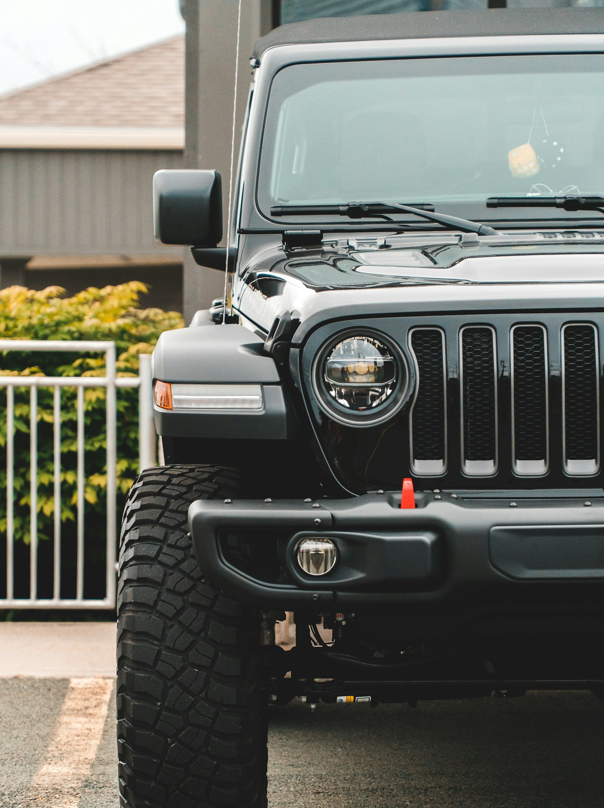
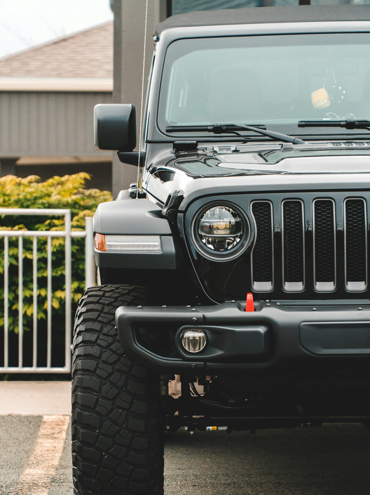

Available rental options
Explore Cozumel in style with our diverse range of rental options. Cruise through the island's charming streets and scenic coastline aboard our Honda motor scooters, including the solo-friendly Honda Metropolitan (49cc), the Dio (110cc) perfect for two, and the PCX150 (149cc) also accommodating two passengers. For those seeking off-road adventures, our side-by-side ATVs, such as the Honda Pioneer 1000, offer thrilling experiences for up to four passengers. Alternatively, opt for our rugged Jeep Wranglers, available in both four-door manual with A/C, accommodating up to five passengers, and two-door open-air manual configurations for groups of four. Whatever your exploration style, our rentals provide the perfect way to discover Cozumel's beauty and charm.
Honda Motor Scooters
Embark on an unforgettable journey around Cozumel aboard our sleek and reliable Honda motor scooters. Perfect for solo adventurers or couples seeking to explore the island's wonders, our fleet includes the nimble Honda Metropolitan (49cc), ideal for navigating narrow streets and bustling markets with ease. For those craving a bit more power, the Honda Dio (110cc) offers a smooth and comfortable ride for two, while the spacious Honda PCX150 (149cc) provides ample room and power for duo excursions. With user-friendly controls and agile maneuverability, our Honda scooters promise an effortless and exhilarating way to discover Cozumel's hidden gems at your own pace. Experience the freedom of the open road and the thrill of exploration with Scoots.


Options available:
- Honda Metropolitan (49cc) - 1 person
- Honda Dio (110cc) - 2 person
- Honda PCX150 (149cc) - 2 person
Side-by-Side ATVs
Unleash your sense of adventure with our Honda side-by-side ATVs, the ultimate way to explore Cozumel's rugged terrain and off-road trails. Our fleet includes the formidable Honda Pioneer 1000, capable of accommodating up to four passengers for an exhilarating group expedition. Equipped with powerful engines and advanced suspension systems, our ATVs ensure a smooth and thrilling ride, whether you're conquering rocky paths or cruising through lush jungle landscapes. With ample seating and storage space, along with intuitive controls for easy handling, our Honda ATVs offer a safe and comfortable adventure for riders of all skill levels. Prepare to embark on an adrenaline-fueled journey and create unforgettable memories with Scoots.
Options available:
- Honda Pioneer 1000 - 4 person
Jeeps
Experience the freedom of the open road with our rugged Jeep rentals, the perfect choice for exploring every corner of Cozumel's diverse terrain. Choose from our versatile fleet, including the spacious four-door Jeep Wrangler equipped with air conditioning and manual transmission, accommodating up to five passengers comfortably. For a more intimate adventure, opt for our two-door open-air Jeep Wrangler, ideal for groups of four looking to feel the wind in their hair as they navigate the island's scenic roads. With sturdy construction, powerful engines, and off-road capabilities, our Jeep rentals provide the perfect blend of comfort and excitement for your Cozumel exploration. Get ready to embark on an unforgettable journey and discover the island's hidden treasures with ease, courtesy of Scoots.
 

Options available:
- Jeep Wrangler - 4 door manuel with A/C - 5 person
- Jeep Wrangler - 2 door - open air - manuel - 4 person
| Max Rental Pricing | |||||
|---|---|---|---|---|---|
| Reservation | Walk-In | ||||
| Rental Type | Max. Persons | Half Day (3 hrs) | Full Day | Half Day (3 hrs) | Full Day |